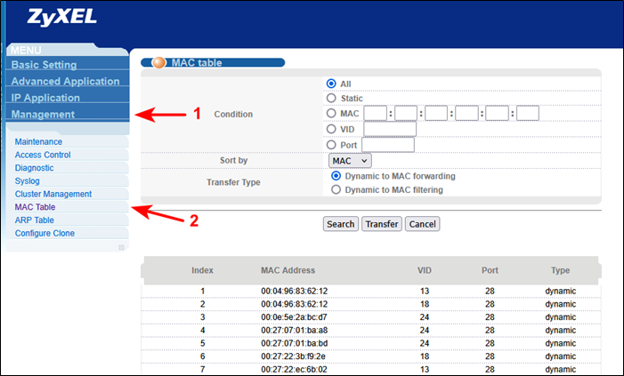
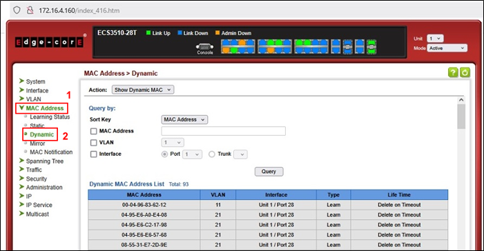
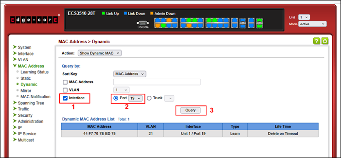
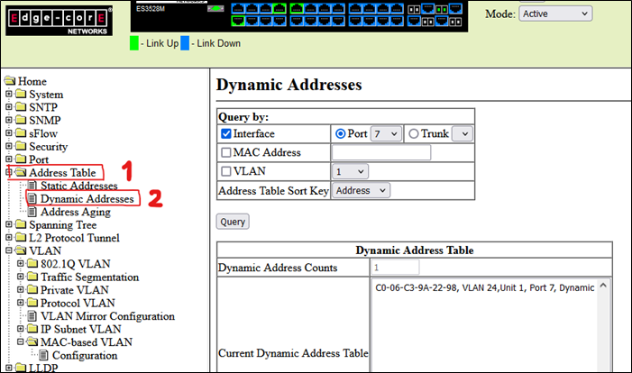
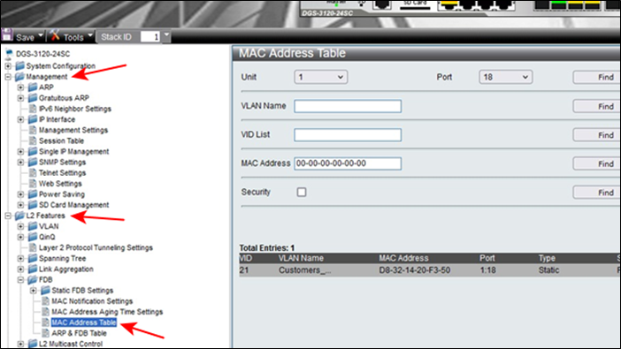

Проверка МКД (FTTB)
Заходим по ip адресу комутатора в комутатор, смотрим приходит ли МАК, если да, то просим перезагрузить не получается вытащить и засунуть кабель, опять не получается отправить инженера.
Квартирный коммутатор: ZyXEL
Копируем IР-адрес в описание Lanbiiling2:
1. Пример Адреса: 172.16.24.13
2. Вставляем его в поиск гугла.
3. Водим: admin
4. Пароль 9sХv4Sm1Ue
5. Переходим в : Management > МАС Address Таble

6. Выбираем порт, он указан в учётку Биллинга.
7. Нажимаем: Search
8. Проверяем сессию в Lanbilling2
9. Если МАК приходит, значит работает. Если нет, вытащить кабель из
роутера и обратно вставить.
10. Просите абонента перезагрузить
Квартирный коммутатор: Еdgе-соге
1. Копируем IР-адрес в описание Lanbiiling2. (Пример Адреса: 172.16.24.95)
4. Водим: admin
5. Пароль 9sХv4Sm1Ue
6. Заходим в МАС Address > Dynamic > Interface > Роrt > Query

7. Выбираем порт, он указан в учетке Lanbiiling2

8. Проверяем сессию в Lanbiiling2. Сессия есть работает.

C-DATA-OLT 172.16.11.10 @PON1
1. PON подключение: используем конструктор Secure CRT
2. PBeam-M5-300 @ Kart2_S-2 Радио подключение: Используем: UMMS.
3. Проверяем есть ли сессия по ip-адресу. Копируем, вставляем в Поиск Браузера.
4. MES-3500-24 (172.16.24.11) @ port 10. FTTB- подклю. Копируем ip-адрес и вставляем в Поиск Браузера.
